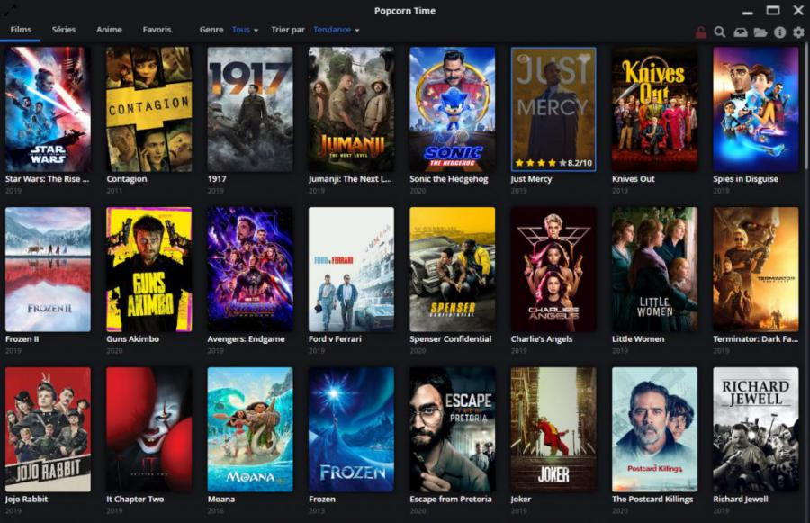

WhatsApp mostra fotos de contatos em notificações no iPhone
O WhatsApp começou a disponibilizar uma atualização com um novo recurso para utilizadores do iPhone esta segunda-feira. Disponível inicialmente em dispositivos iOS, como relata o WABetaInfo, a mensagem passa a exibir fotos de perfil quando um utilizador recebe notificações. Essa é a primeira nova função da aplicação em 2022.
Como relatado pelo site, que monitoriza as atividades do WhatsApp, a atualização foi lançada para utilizadores da versão beta que também utilizam o iOS 15. Numa captura de ecrã, é possível conferir que a imagem de perfil aparece no espaço maior, enquanto o ícone da app é exibido logo abaixo.
Disponível na versão 2.22.1.1 da aplicação, a nova função ainda não tem data para ser implementada de forma geral, tão pouco para o Android. Por se tratar de uma função que, neste momento, utiliza APIs do iOS 15 para funcionar, é possível que ainda demore alguns meses até que o lançamento final aconteça.
Em 2021, o WhatsApp implementou uma série de novas funções que o colocam em melhor posição de disputa em relação aos concorrentes. Entre elas, a app trouxe o suporte para múltiplos dispositivos, sem a necessidade do telemóvel, além da possibilidade de acelerar áudios em até 2x e de ouvi-los antes do envio.

